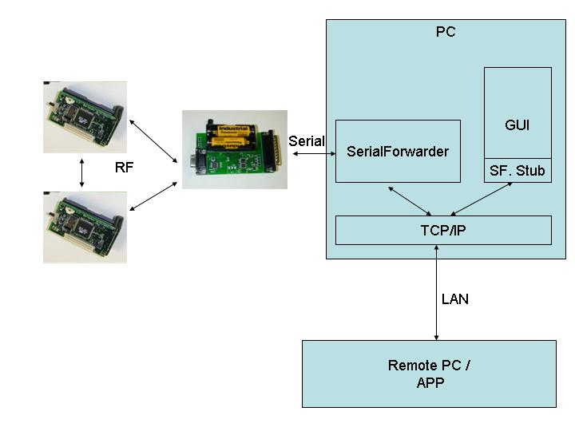

|
Lesson 6:
Displaying Data on a PC
Last updated 1 Aug. 2002 |
To goal of this lesson is to integrate the sensor network with a PC, allowing us to display sensor readings on the PC as well as to communicate from the PC back to the motes. First, we'll introduce the basic tools used to read sensor network data on a desktop over the serial port. Next we'll demonstrate a Java application that displays sensor readings graphically. Finally, we'll close the communication loop by showing how to send data back to the motes.
The mote application we use in this lesson is found in apps/Oscilloscope. It consists of a single module that reads data from the photo sensor. For each 10 sensor readings, the module sends a packet to the serial port containing those readings. The mote only sends the packets over the serial port, but it would be trivial to have it send the data over the radio instead.
Compile and install the Oscilloscope application on a mote. You will need to connect a sensor board to the mote to get the light readings. Remember to set the SENSORBOARD option in apps/Oscilloscope/Makefile to either micasb or basicsb depending on the type of sensor board you have.
This application requires that the mote with the sensor be connected to the serial port on the programming board. Note that the size of the current Mica sensor board prevents you from plugging the mote and board into the programming board directly. One workaround is to use a short cable to connect the programming board to the sensor board connector.
When the Oscilloscope application is running, the red LED lights when the sensor reading is over some threshold (set to 0x20 by default in the code - you might want to change this to a higher value if it never seems to go off in the dark). The yellow LED is toggled whenever a packet is sent to the serial port.
The first step to establishing communication between the PC and the mote is to connect up your serial port cable to the programming board, and to make sure that you have Java and the javax.comm package installed. After programming your mote with the Oscilloscope code, cd to the tools/java directory, and run
make java net.tinyos.tools.ListenRaw <serialport>where <serialport> is the serial port that you have connected the programming board to. Using
java net.tinyos.tools.ListenRaw -pwill list the available ports. In most cases just use
java net.tinyos.tools.ListenRaw COM1
You should see some output resembling the following:
% java net.tinyos.tools.ListenRaw COM1 Opening port COM1 baud rate: 19200 data bits: 8 stop bits: 1 parity: 0 7e 00 0a 7d 1a 01 00 0a 00 01 00 46 03 8e 03 96 03 96 03 96 03 97 03 97 03 97 03 97 03 97 03 7e 00 0a 7d 1a 01 00 14 00 01 00 96 03 97 03 97 03 98 03 97 03 96 03 97 03 96 03 96 03 96 03 7e 00 0a 7d 1a 01 00 1e 00 01 00 98 03 98 03 96 03 97 03 97 03 98 03 96 03 97 03 97 03 97 03
The program is simply printing the raw data of each packet received from the serial port.
If you don't have the javax.comm package installed properly, then the program will complain that it can't find the serial port; the -p option also won't return anything. If you do not see that data lines on the screen, you may have chosen the wrong COM port or the mote may not be correctly connected to the computer.
The application that you are running is simply printing out the packets that are coming form the mote. Each data packet that comes out of the mote contains several fields of data. Some of these fields are generic Active Message fields, and are defined in tos/system/AM.h. The data payload of the message, which is defined by the application, is defined in tos/lib/OscopeMsg.h. The overall message format for the Oscilloscope application is as follows:
So we can interpret the data packet as follows:
| dest addr | handlerID | groupID | msg len | source addr | counter | channel | readings | |
| 7e 00 | 0a | 7d | 1a | 01 00 | 14 00 | 01 00 | 96 03 97 03 97 03 98 03 97 03 96 03 97 03 96 03 96 03 96 03 |
Note that the data is sent by the mote in big-endian format; so, for example, the two bytes 96 03 represent a single sensor reading with most-significant-byte 0x03 and least-significant-byte 0x96. That is, 0x0396 or 918 decimal.
Here is an excerpt from OscilloscopeM.nc showing the data being written to the packet:
OscilloscopeM.nc
event result_t ADC.dataReady[uint8_t port](uint16_t data) {
//Type cast the data buffer to the packet type
struct OscopeMsg *pack = (struct OscopeMsg *)msg[currentMsg].data);
// Add the new sensor reading to the packet
pack->data[packetReadingNumber++] = data ;
//Increment the counter that records the number of bytes.
readingNumber++ ;
//If the packet is full
if(packetReadingNumber == READINGS_PER_PACKET){
//Set the byte counter back to zero
packetReadingNumber = 0 ;
//Record the channel that the data came from
pack->channel = 1;
//Put the reading number into the packet
pack->lastReadingNumber = readingNumber;
//Put the source address into the packet
pack->sourceMoteId = TOS_LOCAL_ADDRESS ;
// send the packet out
if (call DataMsg.send(TOS_UART_ADDR, sizeof(struct OscopeMsg),
&msg[curentMsg])) {
// Flip-flop between two outgoing message buffers
// to avoid clobbering data that is being sent
currentMsg ^=0x1;
call Leds.yellowToggle();
}
}
if (data > 0x0300) call Leds.redOn();
else call Leds.redOff();
return SUCCESS;
}
|
The ListenRaw program is the most basic way of communicating with the mote; it directly opens the serial port and just dumps packets to the screen. Obviously it is not easy to visualize the sensor data using this program. What we'd really like is a better way of retrieving and observing data coming from the sensor network.
The SerialForward program is used to read packet data from a serial port and forward it over an Internet connection, so that other programs can be written to communicate with the sensor network over the Internet. To run the serial forwarder, run the program
java net.tinyos.sf.SerialForwardThis will open up a GUI window that should look like the following:
SerialForward does not display the packet data itself, but rather updates the packet counters in the lower-right hand corner of the window. Once running, the serial forwarder listens for network connections on a given TCP port (9000 as shown here), and simply forwards data from the serial port to the network connection, and vice versa. Note that multiple applications can connect to the serial forwarder at once, and all of them will receive data from the sensor network.
| Starting the Oscilloscope GUI |
It is now time to graphically display the data coming from the motes. Leaving the serial forwarder running, execute the command
java net.tinyos.oscope.oscilloscopeThis will pop up a window containing a graphical display of the sensor readings from the mote. It connects to the serial forwarder over the network and retrieves packet data, parses the sensor readings from each packet, and draws it on the graph:
The x-axis of the graph is the packet counter number and the y-axis is the sensor light reading. If the mote has been running for a while, its packet counter might be quite large, so the readings might not appear on the graph; just power-cycle the mote to reset its packet counter to 0. If you don't see any light readings on the display, be sure that you have not zoomed in on the display.
| Using MIG to communicate with motes |
MIG (Message Interface Generator) is a tool that is used to automatically generate Java classes that correspond to Active Message types that you use in your mote applications. MIG reads in the NesC struct definitions for message types in your mote application and generates a Java class for each message type that takes care of the gritty details of packing and unpacking fields in the message's byte format. Using MIG saves you from the trouble of parsing message formats in your Java application.
MIG is used in conjunction with the net.tinyos.message package, which provides a number of routines for sending and receiving messages through the MIG-generated message classes.
Let's look at the code from GraphPanel.java (part of the oscilloscope program) that communicates with the serial forwarder. First, the program connects to the serial forwarder and registers a handler to be invoked when a packet arrives. All of this is done through the net.tinyos.message.MoteIF interface:
GraphPanel.java
try {
mote = new MoteIF("127.0.0.1", 9000, oscilloscope.group_id);
mote.registerListener(new OscopeMsg(), this);
mote.start();
} catch(Exception e){
e.printStackTrace();
System.exit(-1);
}
|
MoteIF represents a Java interface for sending and receiving messages to and from motes. You initialize it with the IP address and port number of the serial forwarder, as well as an (optional) Active Message group ID. This group ID must correspond to the group ID used by your motes.
We register a message listener (this) for the message type OscopeMsg. OscopeMsg is automatically generated by MIG from the NesC definition for struct OscopeMsg, which we saw earlier in OscilloscopeM.td. Look at tools/java/net/tinyos/oscope/Makefile for an example of how this class is generated. You will see:
OscopeMsg.java:
$(MIG) -java-classname=$(PACKAGE).OscopeMsg $(TOS)/lib/OscopeMsg.h OscopeMsg >$@
Essentially, this generates OscopeMsg.java from the message type
struct OscopeMsg in the header file tos/lib/OscopeMsg.h.
GraphPanel implements the MessageListener interface, which defines the interface for receiving messages from the serial forwarder. Each time a message of the appropriate type is received, the messageReceived() method is invoked in GraphPanel. It looks like this:
GraphPanel.java
public void messageReceived(int dest_addr, Message msg) {
if (!(msg instanceof OscopeMsg)) {
throw new RuntimeException("messageReceived: Got bad message type: "+msg);
}
OscopeMsg omsg = (OscopeMsg)msg;
int moteID, packetNum, channelID;
moteID = omsg.getSourceMoteID();
packetNum = omsg.getLastSampleNumber();
channelID = omsg.getChannel();
/* ... */
|
messageReceived() is called with two arguments: the destination address of the packet, and the message itself (type net.tinyos.message.Message). Message is just the base class for the application-defined message types; in this case we want to cast it to OscopeMsg which represents the actual message format we are using here.
Once we have the OscopeMsg we can extract fields from it using the handy getSourceMoteID(), getLastSampleNumber(), and getChannel() methods. If we look at struct OscopeMsg in OscopeMsg.h we'll see that each of these methods corresponds to a field in the message type:
OscopeMsg.h
struct OscopeMsg
{
uint16_t sourceMoteID;
uint16_t lastSampleNumber;
uint16_t channel;
uint16_t data[BUFFER_SIZE];
};
|
Each field in a MIG-generated class has four methods associated with it:
The remainder of messageReceived() pulls the sensor readings out of the message and places them on the graph.
| Sending a message through MIG |
It is also possible to send a message to the motes using MIG. The Oscilloscope application registers to receive messages of type AM_OSCOPERESETMSG, which causes the mote to reset its packet counter. Looking at clear_data() in GraphPanel.java, we see how messages are sent to the motes:
GraphPanel.java
try {
mote.send(MoteIF.TOS_BCAST_ADDR, new OscopeResetMsg());
} catch (IOException ioe) {
System.err.println("Warning: Got IOException sending reset message: "+ioe);
ioe.printStackTrace();
}
|
All we need to do is invoke MoteIF.send() with the destination address and the message that we wish to send. Here, MoteIF.TOS_BCAST_ADDR is used to represent the broadcast destination address, which is identical to TOS_BCAST_ADDR used in the NesC code.
Transmit the light sensor readings over the radio to another mote that sends them over the serial port!
The Oscilloscope mote application is written to use the serial port and the light sensor. Instead, look at apps/OscillosopeRF, which transmits the sensor readings over the radio. In order to use this application, you need to provide a bridge that receives data packets over the radio and transmits them over the serial port. apps/GenericBase is an application that does this; it simply forwards packets between the radio and the UART (in both directions).
Extra Credit: Change can you figure out how to display sensor readings on the oscilloscope GUI from two motes simultaneously? (Note that the oscillosope GUI is already capable of displaying sensor readings from multiple motes. You have to ensure that those readings are correctly transmitted and received over the network.) This setup would look like the following diagram.
